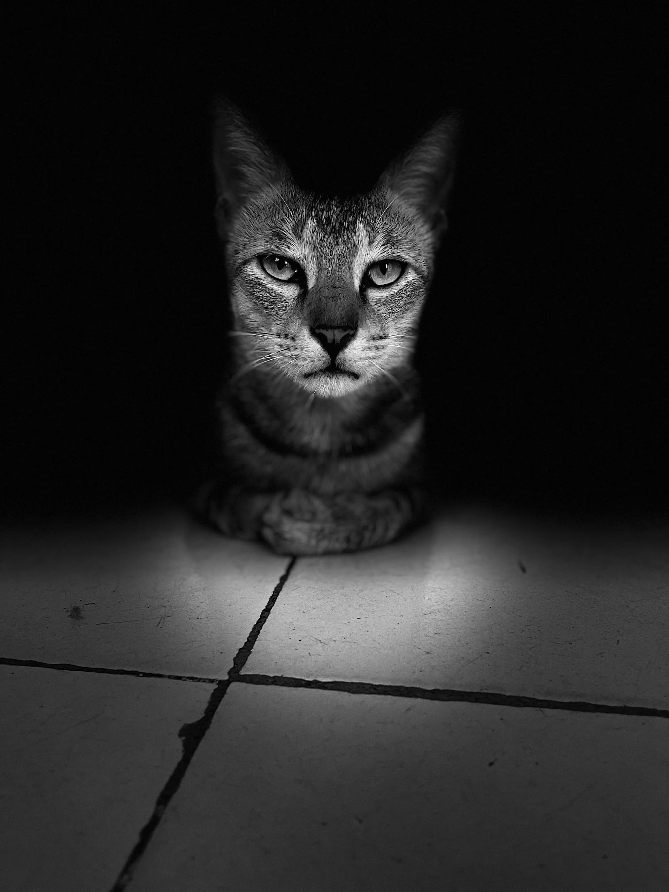
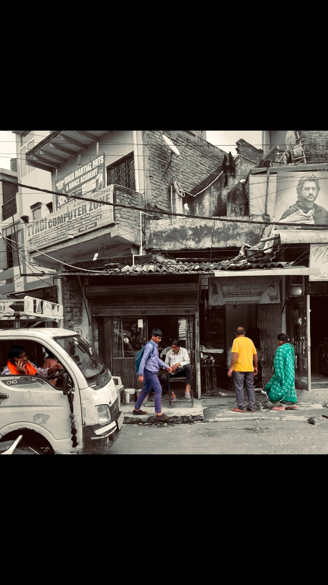

—
Frames from my lens
A glimpse into the creative process







Filmmaker • Storyteller • Visual Artist
Crafting stories that resonate, one frame at a time
View My WorkHonored to attend the 56th International Film Festival of India in Goa as a delegate representing the Creator India Challenge (CIC).
As a finalist of the Young Filmmaker Challenge under WAVES, I had the privilege of promoting CIC and connecting with filmmakers, industry professionals, and creative minds from around the world.
This experience was transformative — from attending masterclasses to networking with established filmmakers, every moment reinforced my passion for visual storytelling and the power of cinema to bridge cultures.
I'm Harshit, a passionate filmmaker who believes in the power of visual storytelling to inspire, provoke thought, and connect people across boundaries.
My work explores the intersection of technology and humanity, personal identity, and the complexities of modern life. Each frame is crafted with intention, every story told with purpose.
From intimate documentaries to thought-provoking narratives, my films have been recognized at prestigious platforms including WAVES 2025 Young Filmmaker Challenge and showcased at the 56th IIFI Goa.
🎬 A short film capturing the emotional journey of a girl battling silence, grief, and the courage to finally speak up. Won Second Prize at Manodaya 5 Minutes Movie Making Challenge 2025. 🏆
A haunting one-minute narrative about Ron, who falls for an AI named Natasha, leading to a tragic end. Shortlisted for WAVES 2025.
A cinematic journey through the Pink City, capturing its architectural grandeur, vibrant culture, and timeless beauty.
A deeply personal self-documentary exploring identity, purpose, and the journey of self-discovery through intimate storytelling.
A glimpse into the creative process


International Film Festival of India
Attended as a delegate to promote the Creator India Challenge (CIC). As a WAVES 2025 finalist, connected with filmmakers and industry professionals from around the world.
Young Filmmaker Challenge
Selected as a Finalist in the Waves Young Filmmaker Challenge for a 1-minute short film — recognized for conveying a strong narrative through minimal storytelling.
5 Minutes Movie Challenge
"The Day I Spoke" won Second Prize — recognized for its honest portrayal of mental health and the courage it takes to break silence.
Interested in collaboration? Have a project in mind? Or just want to say hi? I'd love to hear from you.